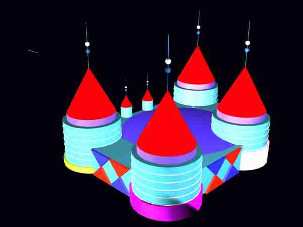

| |
|
LocationThe castle is located in front of a wide canal. At the other side of the canal lay an old cityfarm and slightly furhter a park and a factory. It's along a car/trambridge.Shape
The mainshape is a castle with four round towers at the corners
and massive walls between them.
The towers are topped with red shining spires.
The topfloor of the tower, before the spire starts, has a round balcony.
The walls of the castle carry hanging gardens,
to which the towers' fifth floors open.
Innercourt
The innercourt is covered by a transparant roof and forms a greenhouse in the atrium.
The inside is heated and has high rising botanic plants, bamboo, trees
and a round fountain in the middle.
The roof is dome shaped and composed of a hexagonal steelframes
covered with triple layers of ETFE (plastic),
which let 97% of the UV through.
EntranceThe entrance to the building is through a two story high arched gate at the canalside, which opens to the innercourt. Underneath the building and the atrium is a parking. Daylight enters the parking through the fountains glass bottom.Levels of LuxeryA single large bathroom with a round tub and jacuzzi. A partly transparant wall, which lets daylight in and shapes out.DecorationsBesides the raw outlines of the building as in this photo's the actual facades of the towers and walls will be individually designed and modifiedPhilosophyWhat makes a building durable?What makes a building unique? Well, all old buildings in towns, which still draw crowds, were once build for rich people, that wanted to show off how well they were doing. And to show off their increadible richness they didn't order the cheapest building with the least decorations. No, they ordered lavish decorations and refined shapes. No cost nor effort was saved to make something remarkable. Every square millimeter of the outer and inner surface was used to express their state in the society or their view. And so if you look back and ask whether it was durable, you can answer: Yes, the art and decorations made it so. Most modern day achitecture is a waste of space and money, because a lack of effort in the design and decorations simply doesn't produce the added value to stand the tooth of time. | |
|  | |

| |
| Consulting Architects: | ||
| Paul Rutjes | MSc | Technical University Delft |
| Francois Verhoef | MSc | Technical University Delft |
| Consulting Structural Designer: | ||
| Eef Siemelink | MSc | Technical University Delft |